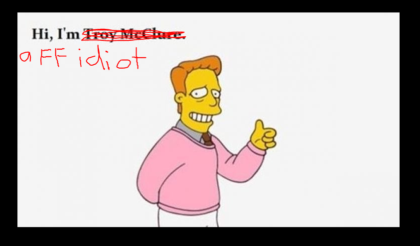
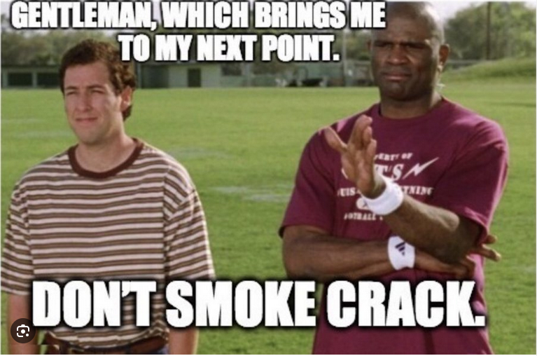

Welcome to the mid-season edition of the Fantasy Fucks Power Rankings, brought to you this week by your favorite commissioner Snake (debatable), and your favorite guest contributor Neil (indisputable). You may remember Neil from such fantasy teams as Josh Allen’s Fat Hog, Unpaid Bills, and “will this guy actually ever make the playoffs again??”

Well now…let’s get started!
Matchup of the Week: Mr. Turna 2-to-uh-4 (5-2) v. Swift Love Kelce (4-3) * What else could it be other than the Turner Bowl? Andy and Kris face off in what should prove to be a pivotal match up not just for this week, but also the greater playoff picture. With the current log jam up top in the standings, a win here puts Andy in great shape to keep himself within the top of the top. And for Kris, if he can take down his older brother here then things look to get VERY interesting as we’ll soon be heading down the stretch for playoff berths and seeding.
What to watch: * Mr. Turna 2-to-uh-4: Mike Evans is out for at least a few weeks. Does he have the depth to stay among the league’s elite teams with one of his top guys missing some time?
- Swift Love Kelce: Can Jordan Mason return to his early season form, especially with a CMC return seemingly imminent? Will Tyreek be viable again with a perpetually concussed Tua set to start for the first time since week 2?
Waiver Wire Wizards and Wieners: * Wizard: PJ - Caleb Williams ($1) – PJ already has the QB pickup of the year, by far, with Baker – why not roll the dice and try and go 2/2 with a hot Caleb Williams. Bonus is that I have it on good authority that PJ is personally rooting really, really hard for all Chicago Bears players to have long term success, so this pickup tracks.
-
Wizard: Jake - DeAndre Hopkins ($11) – Was the price of $11 pretty steep? Yes. Do you get to take your FAAB with you to the grave? No. Could a healthy, albeit old Hopkins immediately step in to a very weak WR room and quickly become the #1 target for the best QB in the league? Also yes.
-
Wizard: Neil - Tank Dell and Ricky Pearsall (combined $11) – With Godwin out for the season, this team has all of a sudden found itself needing some WR help. Brandon Ayiuk is out for the season, Nico Collins is still out indefinitely - and these two relatively cheap pickups could provide the depth needed to weather the (lack of) WR storm.
-
Weiner: Kris - Rashod Bateman ($25) – With no other bids, maybe the newly confident Kris sees something here that we all didn’t? Either way, miss me with any Baltimore receiver at that cost, as long as Lamar Jackson still exists.
Survivor Pool: Three Fucks are left going into Week 8 – two current powerhouses in PJ (8==D) and Andy (Mr. Turna 2-to-uh-4)…plus a little engine that could with Neil (Josh Allen’s Fat Hog). Neil has shattered his previous record survival of Week 1 last year – let’s see if the magic can continue on into the 2nd half of this season.
Mid-Season Awards
by @Jake Bowen
MVP: Baker Mayfield (PJ) This one was close. With PJ atop the rankings, and MVP typically going to that team, it was a tough decision between Baker and King Henry, 2 and 3, respectively, in scoring so far. BUT - PJ started the year without a real QB (Caleb Williams), and added Baker for $1. It’s hard to beat that value.
LVP: Christian McCaffery (Jake via CJ via Andy) How could it be anyone else? #1 pick who hasn’t played a down? Andy flipped him for St. Brown who’s been excellent since the trade. to CJ, then CJ’s only silver lining was trading him away for instant help from David Montgomery (but then he had his worst game).
Most Surprising (in a good way): Allen Lazard (FA) Allen Lazard has scored .1 less than Jordan Mason, and 1.5 more than Malik Nabers. Sure both of the other guys haven’t been healthy every game, but that’s good enough for #42 overall, and he’s fourth or fifth fiddle to some major stars on his team. Yet, he gains no trust from us and remains a free agent after yo-yoing onto a couple squads so far.
Most Surprising (in a bad way): Marvin Harrison Jr. (Andy) He was Week Two’s WR1, but only has one other top-20 finish. For being one of the “most pro-ready receivers in the last few decades”, he ain’t showing it. Over the last four games he’s averaged 5.25 targets and 2.5 receptions per game, with a zero catch game and a total of 102 yards. What’s going on in Arizona?
Brightest Future: Brock Bowers (Seif) More like Brock POWERS. Seif always has his eyes on the fresh meat coming into the league and got it right again. Bowers leads all tight ends in yards and catches, on pace to destroy Ditka’s rookie TE receiving yards, and smash LaPorta’s record-setting 86 catches last year for a rookie. This is all happening in a nightmare season for the Raiders, where he’s bounced back and forth between Minshew and (looks up this guy’s name on Google…) Aiden O’Connell. And I shit you not, they just signed Desmond Ridder, the unicorn-tight-end killer himself. Will Brock be able to withstand this QB hell?
Candle in the Wind: Patrick Mahomes (Joel) Watson is the obvious choice here, but he hasn’t sniffed an FFFB roster spot in years. I was tempted to put Kelce here, but I still think he’s coasting, and honestly, most of the top six rounds have been pretty good - of course a little up and down. But Mahomes has been bad. Of course, the Chiefs are undefeated, but you’re better off starting 75% of the league over Mahomes, and there’s no end in sight. Is this the end of his illustrious career? Find out next on First Take!
Week Eight Power Rankings
- by @Neil Calvert
1. PJ (5-2 W2, PF: 941.62, $27 FAAB)
After a killer week 7, PJ now takes over the coveted top spot in the power rankings. Apart from the amazing QB play of Renaissance Man, Baker Mayfield - this team is anchored by the absolutely disgusting RB duo of King Henry and Breece Hall. With Amari Cooper being dealt to Buffalo and instantly becoming Josh Allen’s #1 outside threat, TE Djoku also gets a huge bump, which could prove to be a huge game changer in the current climate of mediocre TE’s. Other than Cleveland area massage therapists, could anyone have benefited any more from Deshaun Watson’s season ending injury?
2. Seif (5-2 L1, PF: 935.78, $92 FAAB)
Matt slips down to #2, but this team is still an absolute monster. Did I mentioned a climate of mediocre TE’s? Well rookie Brock Bowers ain’t one of them. He’s on an absolute tear as of late, and does not look to be slowing down any time soon. Malik Nabors, who despite a rough last week coming back from a concussion, looks every bit the part of a budding WR superstar. Kamara started the season looking like prime LaDainian Tomlinson, and while he’s come down to earth a little bit, the Saints are getting healthy again and should see him continue to be a focal point of that offense…as mediocre as it may be. Throw in a little compact disc sheep, and very solid depth, this team will be making waves come playoffs.
3. Andy (5-2 W2, PF: 882.02, $0 FAAB)
Lamar. Jackson. What can you say about this guy, he looks poised to grab his 3rd MVP with stellar play week in and week out. Losing Mike Evans for a few weeks could prove tough to overcome, but despite an up-and-down season so far I really like the Sun God in Detroit to continue popping off for the rest of the season. Despite a middling first half of the season, McBride is still a great TE - and although he’ll be competing with Andy’s main flex play, rookie WR Marvin Harrison Jr, that AZ offense should have plenty of targets to go around for both. It also doesn’t hurt to have your K consistently perform as a WR2 (jury duty is over, it’s now Aubrey time).
4. Kris (4-3 W4, PF: 775.04, $34 FAAB)
Is this the highest we’ve had Kris ranked this deep into the season?? Well regardless, his team has earned it. Kenneth Walker looks every bit the feature back he was expected to be, Jordan Mason was obviously a GREAT pickup with no CMC, and this squad just has pretty decent all around depth. Tua is coming back, and although he might not be able to count how many fingers I’m holding up, he’s proven that he can still sling it around the field…especially to one of the most dynamic WR’s of this generation, Tyreek Hill. Never mind him being a child beating PoS, unfortunately that doesn’t negatively factor in to fantasy scoring.
5. Pangy (5-2 W1, PF: 808.82, $2 FAAB)
Like most of our teams, Pangy’s has had its ups and downs - some good weeks and some bad ones…but the man is 5-2 and still tied atop the standings. Before the season I was iffy on Saquon being able to produce in Philly like he did in NY (when healthy), but he’s shown that he can indeed…and then some. Kyren is a beast, and with the Rams finally getting healthy again on offense, he should continue to be a focal point there (and now without constant 8 man boxes every play). He’s had a few traditionally under performing WR’s in Drake London and Scary Terry step up big, and now that Davante is back with his guy A-A Ron, he could sneakily have the best WR corps in the league (I won’t even mention my guy Shakir, who literally catches everything).
6. Jake (5-2 W1, PF 852.08, $35 FAAB)
One of the five 5-2 teams, Snake is clinging on to that sweet, sweet 4th and final playoff spot. With Aiyuk out for the season, expect a big 2nd half of the season from Deebo – and paired with Brock “Brock” Purdy, could prove to be a real nice QB/WR stack down the stretch. Kupp is also back and looking every bit the same elite WR that he’s been for the last several years…assuming he can of course stay healthy. Gibbs is really starting to light it up, and then assuming CMC comes back in any semblance of his previous self, watch out. He’s going to have a lot of 49ers stock going down the stretch, we’ll see if it works out for him (and if not, he can always try and make a trade with Pangy before the deadline).
7. Neil (3-4 L1, PF 854.42, $67 FAAB)
Now we get to the fun write ups, the dregs of the league currently sitting below .500. While I’ve got the 4th most Points For so far after 7 weeks, guess what? That shit doesn’t matter, because that’s not what FF is about! A wise ladies man once said, “you a bad mailman”…and that certainly holds true for this team. Josh Allen is a beast, but a couple very low weekly scores have hurt. Dalton Kincaid was supposed to be a TE ace, and while he’s been serviceable, the Bills sling the ball around too much for him to be a focal point of the offense – and with the addition of Amari Cooper, I don’t see his targets increasing any time soon. A relatively weak RB corps on paper has been, well, pretty much that…and it doesn’t help that this clumsy mailman has also seemingly found ways to ensure that the wrong ones find their way into the starting lineup each week.
8. Joel (2-5 L2, PF 756.62, $31 FAAB)
At 2-5, Joel is obviously in a really tough spot to try and claw his way back into playoff contention. With that said, I definitely can see a way out of the bottom for this squad. Murray and Mahomes as your QB’s…but which one should you start each week!? At WR, Justin Jefferson needs no introduction, and rookie Brian Thomas Jr. is really coming on strong and looking like the real fucking deal. James Cook had a monster start, but from a fantasy perspective has really faltered in the last month. Speaking without an ounce of bias, I expect him to find his fantasy groove the rest of the season as long as he can remain healthy (a tale as old as time). Kreem Hunt has also came on super strong these last few weeks as the Chiefs feature back, we’ll see if that can continue.
9. CJ (1-6 L5, PF 752.68, $6 FAAB)
Similar to Joel, now at 1-6 it’s going to take a hell of a run for CJ to find his way into playoff contention. Like Kris with Tyreek, Tua coming back (until he dies again) should be a huge boon for Achane and Waddle. I really don’t know what to make of Kelce, I certainly don’t think he’s washed, but for a team that has had basically no WRs for a good chunk of the year, it is indeed alarming that his production is as low as it is…especially considering where he’s been the last few years. I’m still quite high on Josh Jacobs, but CJ is gonna need him to stay a RB1 (which he has been the last month) in order to have much of a chance going forward. Maybe Taylor can get healthy as well, but at this point I really don’t have much faith in the Colts offense.
10. Tony (0-7 L7, PF 707.18, $52 FAAB) ↔️⬆️⬇️
Tony, Tony, Tony. What went wrong my friend? I’m still high on Hurts and Bijan, but this team is lacking the top end talent AND depth that the big boys have shown us thus far. Prior to last week’s 30 point performance (perhaps he can replicate that??), my dude Rachaad White has looked like nothing more than an afterthought in TB. Rico Dowdle seemed like one of the sexy late round picks pre-draft, but that obviously hasn’t worked out either. And what do we make of Sam Laporta, the (allegedly) young TE extraordinaire, being benched for Cade Otton (the right move at this point). This team is gonna need a miracle to turn it around – and luckily he’s playing the guy this week that could just help him make that happen.
Good luck to everyone besides Joel and Tony!
“Taking them out of the picture, so to speak, what football really is, the savagery, the core root of football, it doesn’t change. It really puts the real in football.”
“In football, you can always maim a person if you wanted to.”
“I had everything working my way, strong as a bull. And still I ignored the rules of the game of life.”
“They would almost throw the cops in jail when they tried to arrest me.”
“Well, actually, I do the voice over for Quentin Sands.”- Lawrence Taylor
